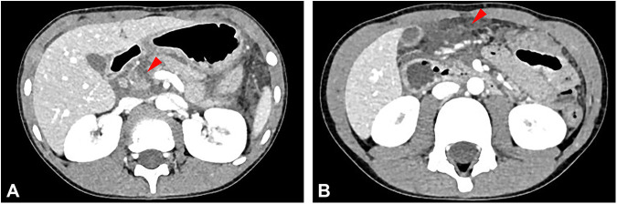
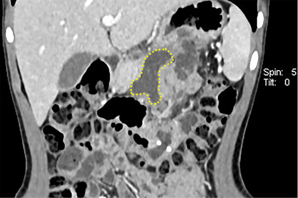
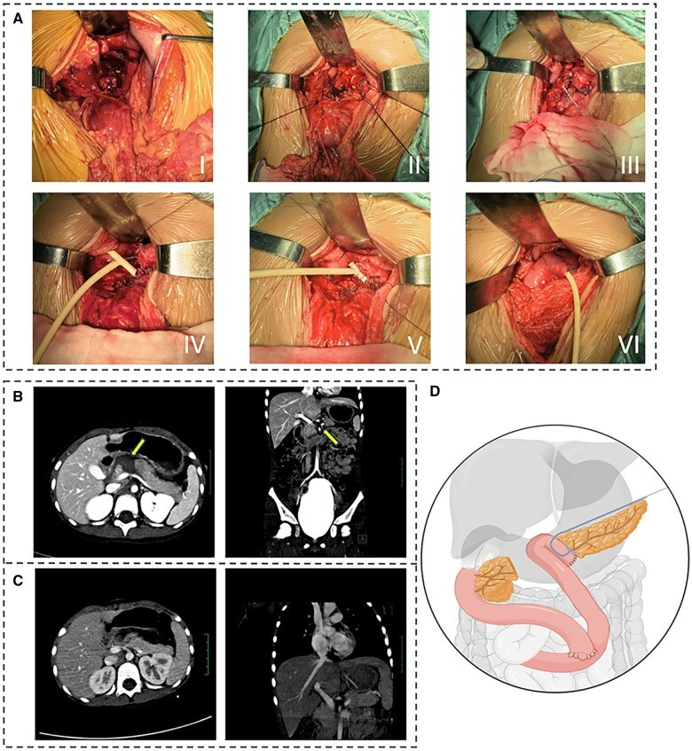

6121 — Rò tụy sau cắt thân–đuôi/bóc u tụy ở trẻ: phân độ ISGPS, ngưỡng amylase dịch dẫn lưu và khi nào mổ lại
Tags: pattern:ro-tuy pattern:dich-quanh-tuy pattern:ap-xe-o-bung pattern:gia-phinh-dong-mach pattern:tu-mau-sau-mo vung:tuy vung:o-bung protocol:CT-bung-co-can-quang protocol:MRI-MRCP protocol:EUS-ERCP protocol:DSA score:ISGPS-2016 score:FRS
Mức chắc chắn (certainty): tổng hợp y văn (literature synthesis) — ghép bài tổng quan toàn diện về rò tụy sau mổ (eGastroenterology 2025, PMC12699584), 89 lần mổ tụy ở 74 trẻ cường insulin bẩm sinh/insulinoma (Pediatr Surg Int 2025, PMC12443887), 32 trẻ u đặc–nhầy nhú có rò tụy độ C sau bóc u đầu tụy (PLoS One 2026, PMC13561321), so sánh bóc u nội soi vs mở ở trẻ (Front Pediatr 2025, PMC12627055), kỹ thuật U-suture không stent ở 5 trẻ (Front Pediatr 2026, PMC13433606), tổng quan robot cắt thân tụy trung tâm ở trẻ (J Robot Surg 2026, PMC13102831), ca bé gái 5 tuổi đứt cổ tụy do chấn thương kèm kỹ thuật "tube-in-tube" (Gastroenterol Rep 2024, PMC11220174) và bài tổng quan biến chứng sau cắt tá tụy (PMC12917441).
Câu hỏi thực hành: bé gái 5 tuổi bị chấn thương bụng kín 12 giờ trước, đau bụng dữ dội, amylase 443 U/L, lipase 440 U/L. CT: đứt ngang cổ tụy kèm máu tụ. Mổ: khâu đầu tụy, cắt thân–đuôi hoại tử, miệng nối tụy–hỗng tràng, đặt dẫn lưu cạnh miệng nối. Ngày hậu phẫu 3: dịch dẫn lưu đục, 180 mL/ngày; ngày 7: sốt 38,6 °C, đau thượng vị, bạch cầu tăng. Câu hỏi: dịch dẫn lưu bao nhiêu amylase thì gọi là rò tụy? "rò sinh hóa" khác "rò có ý nghĩa lâm sàng" ở đâu? khi nào chỉ theo dõi, khi nào chọc dẫn lưu, khi nào phải mổ lại — và vì sao trẻ em lại dễ rò hơn người lớn? Bài chốt bốn việc: (1) rò tụy sau mổ (postoperative pancreatic fistula, POPF) = amylase dịch dẫn lưu > 3 lần giới hạn trên amylase máu, từ ngày hậu phẫu 3 trở đi (ISGPS); (2) từ 2016, "rò sinh hóa" (biochemical leak) không còn là rò thật — chỉ độ B/C mới có ý nghĩa lâm sàng; (3) trẻ có ống tụy thường < 2 mm và nhu mô mềm, dễ vỡ → tỉ lệ rò sau cắt thân–đuôi/bóc u 11–22%, nhưng rò độ C hiếm; (4) CT có cản quang là chuẩn tìm ổ dịch/giả phình, còn dẫn lưu qua da + nuôi ăn xử lý được phần lớn độ B — mổ lại chỉ khi nhiễm trùng không kiểm soát, chảy máu hoặc suy cơ quan. Nối 6120 – U tụy ở trẻ, 135 – Viêm tụy cấp theo Atlanta, 136 – U nang tụy, 6115 – Tăng áp cửa phía trái do tắc tĩnh mạch lách.
1. Tổng quan bệnh học – cơ chế hình ảnh: tại sao "rò" lại là bệnh của enzym
- Định nghĩa chuẩn (ISGPS): POPF là rò ra ngoài qua dẫn lưu bụng, với amylase dịch dẫn lưu > 3 lần giới hạn trên của amylase huyết thanh, đo từ ngày hậu phẫu (POD) 3 trở đi. Năm 2016, ISGPS bổ sung khái niệm ý nghĩa lâm sàng: "rò sinh hóa" (biochemical leak, BL) — trước đây là độ A — không có hậu quả lâm sàng; rò có ý nghĩa lâm sàng (clinically relevant, CR-POPF) chia độ B (cần can thiệp tối thiểu: kéo dài dẫn lưu, can thiệp nội soi) và độ C (suy cơ quan, mổ lại, tử vong) (eGastroenterology 2025, PMC12699584).
- TẠI SAO ngưỡng lại là "3 lần" và "ngày 3": amylase trong dịch dẫn lưu phản ánh enzym tụy rò ra khoang quanh tụy, không phải amylase máu. Ngưỡng 3× ULN được chọn để tách rò thật khỏi nhiễm amylase nhẹ do thao tác mổ/phù nề miệng nối; POD 3 là thời điểm miệng nối đã đủ "thử thách" bởi dịch tụy tiết ra, và mô hoại tử đã bong — trước đó amylase cao chưa đủ kết luận.
- TẠI SAO enzym tụy gây tổn thương nặng: dịch tụy chứa trypsin, chymotrypsin, elastase, lipase ở dạng hoạt hóa; khi rò ra ngoài, enzym tự tiêu hóa mỡ và mô liên kết quanh tụy, gây viêm, hoại tử, áp-xe, và ăn mòn thành mạch → giả phình động mạch → chảy máu ồ ạt (eGastroenterology 2025, PMC12699584).
- TẠI SAO trẻ em lại "dễ rò" hơn về mặt kỹ thuật: theo bài tổng quan và loạt U-suture, ống tụy chính ở trẻ thường < 2 mm, nhu mô tụy mềm, dễ rách, chức năng ngoại tiết mạnh — bộ ba này làm miệng nối tụy–ruột khó làm và diện cắt dễ rỉ dịch (Front Pediatr 2026, PMC13433606). Tuy vậy, tỉ lệ rò ở trẻ không cao hơn người lớn: bài tổng quan dẫn đoàn hệ nhi của Fuchs cho POPF 7% chung, 17% sau cắt thân–đuôi, 0% sau cắt tá tụy — có thể vì trẻ ít béo, ít đái tháo đường, ít xơ hóa tụy (PMC12699584).
- Số liệu định lượng phải thuộc:
- Người lớn sau cắt tá tụy: POPF 10–30%, chậm làm rỗng dạ dày 15–45%, chảy máu sau cắt tụy 3–10%; biến chứng chung 30–60%, tử vong < 5% ở trung tâm lớn (PMC12917441; PMC12699584).
- Trẻ sau mổ tụy: loạt 89 lần mổ ở 74 trẻ cường insulin bẩm sinh/insulinoma: POPF 11%, CR-POPF 3,4%, biến chứng nặng CMC ≥ IIIb 8%; biến chứng hay gặp nhất là nhiễm trùng 29%, rồi chậm làm rỗng dạ dày 20% (Pediatr Surg Int 2025, PMC12443887).
- Trẻ bóc u đặc–nhầy nhú: 32 trẻ, 5 ca biến chứng sớm — TẤT CẢ ở u ĐẦU tụy (p = 0,015); CR-POPF sau bóc u đầu tụy 2 ca: 1 độ B (hồi phục bảo tồn) và 1 độ C (phải làm lại miệng nối tụy–ruột); không tử vong; nằm viện trung vị 10 ngày (PLoS One 2026, PMC13561321).
- Bóc u nội soi vs mở: rò tụy 22,2% vs 18,2% (p = 1,000), không có độ C (Front Pediatr 2025, PMC12627055).
- Amylase dịch dẫn lưu ngày 1: > 5.000 U/L làm tăng nguy cơ POPF OR ~3; < 600 U/L dự báo không rò đáng tin cậy; lipase có tỉ lệ dương tính giả 12% nên không thay amylase (PMC12699584).
- Điểm nguy cơ (FRS/a-FRS): gồm độ mềm nhu mô, đường kính ống tụy, lượng máu mất; AUROC khi phát triển 0,94 nhưng khi kiểm định ngoài chỉ 0,71 (FRS) và 0,72 (ua-FRS) — dùng để tư vấn, không để quyết định một mình (PMC12699584).
- TẠI SAO rò tụy "ăn mòn" mạch máu: dịch tụy hoạt tính gây viêm quanh mạch, phá hủy lớp áo giữa → giả phình ở mỏm động mạch vị tá tràng (GDA) hoặc nhánh động mạch gan; giả phình có thể rỉ máu "sentinel bleed" vào dẫn lưu vài giờ–vài ngày trước khi vỡ. Đây là lý do mọi chảy máu nhỏ qua dẫn lưu sau mổ tụy đều phải chụp mạch, không chờ (PMC12917441).

Bé 5 tuổi, chấn thương bụng kín (ca 5 trong loạt U-suture): (A) mất liên tục nhu mô cổ tụy (mũi tên đỏ), nhu mô không đồng nhất, mờ các mặt phẳng mỡ quanh tụy; (B) dịch quanh tụy (mũi tên đỏ) — nền của cả rò tụy do chấn thương và rò sau mổ. Điểm cần nhớ: dịch quanh tụy một mình không phải rò — phải có amylase dịch dẫn lưu hoặc bằng chứng ống tụy bị gián đoạn. Nguồn: Front Pediatr 2026 (PMC13433606), CC BY 4.0, nguyên bản.2. Mẫu hình + chẩn đoán phân biệt theo thời điểm và hình thái (gamut)
- Gamut theo thời điểm:
- POD 1–2: amylase dẫn lưu cao nhưng chưa gọi POPF — có thể chỉ là rò sinh hóa sớm/phản ứng phù nề; theo dõi, không can thiệp.
- POD 3–7: cửa sổ chẩn đoán POPF; sốt, đau, bạch cầu/CRP tăng, dịch dẫn lưu đục hoặc đổi màu.
- POD 7–30: biến chứng muộn — áp-xe, giả phình, chảy máu muộn, hẹp miệng nối; đây là giai đoạn CT có cản quang có giá trị nhất.
- > 1 tháng: rò tụy mạn/nang giả tụy, hẹp miệng nối, suy tụy ngoại tiết.
- Gamut theo hình thái trên CT:
- Dịch quanh miệng nối/diện cắt đồng nhất, thành mỏng → rò đơn thuần (thường độ B).
- Ổ dịch có bóng khí/thành dày ngấm thuốc → áp-xe (độ B/C, cần dẫn lưu).
- Máu tụ mới + hematocrit giảm → chảy máu sau mổ (không phải rò, nhưng thường đi kèm).
- Nang giả phình trong/quanh ổ dịch (ngấm thuốc đồng thì với động mạch) → nguy cơ chảy máu ồ ạt.
- Ống tụy gián đoạn/đứt rời (disconnected duct) → rò kéo dài, khó lành, cần can thiệp nội soi/mổ.
- Gamut theo loại miệng nối: tụy–hỗng tràng (PJ) sau cắt đầu tụy/trung tâm · diện cắt thân–đuôi (đóng bằng stapler/khâu) · mặt cắt sau bóc u (enucleation) — rò từ nhu mô, không từ miệng nối · vỡ ống tụy do chấn thương (không phải rò sau mổ nhưng cùng sinh lý).
- Mnemonic "DRAIN" của rò tụy: Debris/collection (ổ dịch) · Rising amylase (dịch dẫn lưu) · Abscess (sốt, bạch cầu) · Injury to duct (ống tụy gián đoạn) · Necrosis/hemorrhage (giả phình, chảy máu).
3. Bảng so sánh phân biệt (ma trận đối chiếu)
| Thực thể (entity) | Hình ảnh điển hình | Chốt vào (rule-in) | Chốt loại (rule-out) | Gợi ý xác nhận |
|---|---|---|---|---|
| Rò sinh hóa (BL, cựu độ A) | Dịch quanh miệng nối lượng ít, không có ổ dịch, không khí, không sốt | Amylase dẫn lưu > 3× ULN nhưng KHÔNG đổi xử trí, không sốt, không đau tăng | Sốt/đau tăng/ổ dịch trên CT → không còn là BL | Theo dõi 24–48 giờ, không nâng cấp điều trị |
| Rò độ B (CR-POPF) | Ổ dịch quanh miệng nối, có thể bóng khí, thành ngấm thuốc; dẫn lưu kéo dài > 3 tuần | Amylase > 3× ULN + sốt/đau + cần dẫn lưu qua da hoặc nội soi, nhưng KHÔNG suy cơ quan | Suy cơ quan/mổ lại → độ C, không phải B | CT có cản quang; dẫn lưu qua da; đặt stent ống tụy qua ERCP/EUS |
| Rò độ C (CR-POPF nặng) | Ổ dịch lớn/áp-xe lan, hoại tử, giả phình, dịch ổ bụng, suy đa cơ quan | Suy cơ quan hoặc mổ lại hoặc tử vong do rò | Không suy cơ quan, đáp ứng dẫn lưu → độ B | CT + CTA; mổ lại/hoàn tất cắt tụy |
| Viêm tụy cấp sau mổ (PPAP) | Tụy phù, phản ứng viêm quanh tụy, amylase máu tăng; có thể tiến triển thành rò | Amylase máu tăng + đau + hình ảnh viêm tụy trong 3 ngày đầu | Amylase máu bình thường, chỉ amylase dịch cao → POPF | Amylase máu/CRP; CT muộn hơn |
| Rò mật (bile leak) | Ổ dịch đường mật, dịch vàng–xanh, bilirubin dịch cao | Bilirubin dịch > 3× ULN + vị trí gần miệng nối mật–ruột | Dịch trong, amylase cao, bilirubin thấp → rò tụy | Bilirubin dịch, MRCP/ERCP |
| Rò dưỡng trấp (chylous) | Dịch trắng đục, lượng lớn, sau mổ quanh tụy/hạch | Triglycerid dịch > 200 mg/dL + dầu mỡ trong dịch | Dịch trong, triglycerid thấp → không phải dưỡng trấp | Triglycerid dịch; nuôi ăn MCT |
| Giả phình/chảy máu muộn | Nốt ngấm thuốc đồng thì động mạch trong ổ dịch; sentinel bleed qua dẫn lưu | Chảy máu qua dẫn lưu + giả phình trên CTA | Máu tụ không ngấm thuốc, không có nguồn mạch → theo dõi | CTA → DSA nút mạch, không chờ |
| Nang giả tụy (pseudocyst) | Nang thành mỏng, không có phần đặc, xuất hiện > 4 tuần sau viêm/mổ | Nang không có phần đặc + tiền sử viêm/chấn thương + amylase dịch nang cao | Có phần đặc/vỏ bao → nghĩ u (bài 6120) | Siêu âm/CT; can thiệp khi > 6 cm, có triệu chứng hoặc tăng kích thước |
- Không tạo ảnh ghép: 3 ảnh thuộc 3 bệnh nhân khác nhau (ca chấn thương cổ tụy; ca theo dõi sau mổ ngày 11; ca kỹ thuật tube-in-tube) — ghép cạnh nhau dễ khiến người đọc tưởng cùng một ca.
4. Protocol chụp + phân độ ISGPS + bậc thang xử trí
- Khi nào chụp CT: không chụp thường quy chỉ vì amylase dẫn lưu cao. Chụp khi sốt, đau tăng, bạch cầu/CRP tăng, dịch dẫn lưu đổi màu/tăng lượng, vàng da, chảy máu, hoặc dẫn lưu không giảm sau 5–7 ngày.
- Protocol CT bụng:
- Không cản quang (tìm máu tụ, vôi hóa) → thì động mạch (35–40 giây) → thì tĩnh mạch cửa (65–70 giây), lát 1–3 mm, tái tạo coronal/sagittal.
- Đọc theo 4 câu hỏi: (1) ổ dịch ở đâu, kích thước? (2) có khí/thành ngấm thuốc (áp-xe)? (3) có giả phình/chảy máu? (4) ống tụy có liên tục không?
- MRCP khi nghi gián đoạn ống tụy hoặc rò kéo dài — thấy đoạn ống mất liên tục, dịch nang thông với ống tụy.
- EUS/ERCP vừa chẩn đoán vừa điều trị: đặt stent ống tụy, dẫn lưu ổ dịch qua dạ dày, hoặc rendezvous khi ERCP thường thất bại.
- Phân độ ISGPS 2016 và xử trí tương ứng:
flowchart TD
A[Amylase dịch dẫn lưu > 3 lần ULN từ POD 3] --> B{Có thay đổi lâm sàng hoặc cần can thiệp?}
B -->|Không| C[Rò sinh hóa - biochemical leak<br/>Theo dõi, giữ dẫn lưu, không nâng cấp]
B -->|Có, nhưng không suy cơ quan| D[Độ B<br/>Nuôi ăn, kháng sinh khi nhiễm, dẫn lưu qua da, stent ống tụy]
B -->|Suy cơ quan hoặc mổ lại| E[Độ C<br/>Hồi sức, mổ lại, hoàn tất cắt tụy, ICU]
C --> F[Amylase giảm + dẫn lưu giảm: rút dẫn lưu]
D --> G{Đáp ứng sau 24-48 giờ?}
G -->|Có| H[Tiếp tục dẫn lưu, cho ăn lại dần]
G -->|Không| E
D --> I[Chảy máu qua dẫn lưu]
I --> J[CTA ngay - nút mạch giả phình]
- Bậc thang xử trí (từng bước, không nhảy cóc):
- Xác nhận bằng amylase dịch dẫn lưu (không dựa amylase máu).
- Rò sinh hóa: không làm gì thêm — giữ dẫn lưu, theo dõi.
- Độ B: nuôi ăn (ưu tiên đường tiêu hóa qua sonde đặt dưới chỗ rò, hoặc TPN nếu không dung nạp); kháng sinh chỉ khi có bằng chứng nhiễm; dẫn lưu qua da (thành công 78% ổ áp-xe sau cắt tá tụy — PMC12917441); stent ống tụy qua ERCP/EUS; octreotide chỉ chọn lọc.
- Độ C: hồi sức, dinh dưỡng tĩnh mạch, dẫn lưu ổ nhiễm, mổ lại (khâu lại miệng nối, làm lại miệng nối, hoặc hoàn tất cắt tụy), kiểm soát chảy máu bằng nút mạch trước khi mổ nếu có giả phình.
- Octreotide/somatostatin — dùng đúng chỗ: somatostatin 6 mg/ngày hoặc octreotide ≥ 100 µg × 3 lần/ngày có thể tăng tỉ lệ đóng rò nhưng không có ý nghĩa thống kê do khác biệt giữa các nghiên cứu; một số dữ liệu còn gợi ý tăng CR-POPF và chậm lành vết thương → không dùng thường quy, chỉ cân nhắc ở rò lượng lớn (PMC12699584).
- Dự phòng trong mổ (trẻ em): nhận diện ống tụy (thường < 2 mm), miệng nối tụy–ruột kiểu niêm mạc–niêm mạc hoặc U-suture xuyên tụy, stent ống tụy ngoài hóa khi làm được, che phủ mỏm tụy bằng mạc treo/mạc nối lớn; ở trẻ nhỏ, kỹ thuật không stent có thể an toàn: 5 trẻ, 1 rò sinh hóa, 0 CR-POPF (95% CI 0–52,2%), dẫn lưu rút ngày 5–14 (Front Pediatr 2026, PMC13433606).
- Dự phòng sau mổ: rút dẫn lưu sớm ở nguy cơ thấp (khi amylase ngày 1 thấp và lâm sàng ổn) làm giảm nhiễm trùng mà không tăng rò; không dùng kháng sinh dự phòng kéo dài; ERAS ở trẻ lớn.
- Theo dõi sau ra viện: amylase/lipase máu, siêu âm bụng 2–4 tuần, đánh giá suy tụy ngoại tiết (phân mỡ, giảm cân) và đái tháo đường sau cắt nhiều nhu mô — nhất là sau cắt thân–đuôi gần toàn bộ ở trẻ cường insulin bẩm sinh.
5. Biến thể bình thường và cạm bẫy
- Cạm bẫy 1 — amylase dẫn lưu cao nhưng KHÔNG phải rò: nếu dẫn lưu nằm xa miệng nối hoặc đã rút, amylase có thể thấp giả dù có ổ dịch; ngược lại dịch dẫn lưu nhiễm amylase từ máu có thể cao nhẹ. Luôn đọc cùng lâm sàng + CT (PMC12699584).
- Cạm bẫy 2 — gọi "độ A" rồi điều trị như độ B: từ 2016, độ A không còn tồn tại; rò sinh hóa không cần kháng sinh, không cần nhịn ăn kéo dài, không cần octreotide. Điều trị quá mức gây teo ruột, nhiễm trùng bệnh viện, tăng chi phí.
- Cạm bẫy 3 — bỏ sót "sentinel bleed": máu đỏ tươi qua dẫn lưu dù chỉ 20–30 mL là dấu hiệu giả phình sắp vỡ; phải CTA ngay + DSA nút mạch, không chờ nội soi hay siêu âm.
- Cạm bẫy 4 — CT quá sớm: trong 48 giờ đầu, ổ dịch có thể chỉ là dịch mổ còn lại, không phân biệt được với rò; CT có giá trị nhất từ POD 5–7 khi có triệu chứng.
- Cạm bẫy 5 — nhầm nang giả tụy với rò đang hoạt động: nang giả tụy thành mỏng, không có phần đặc, xuất hiện sau 4 tuần; rò hoạt động có dịch dẫn lưu tăng amylase liên tục. Nếu nang có phần đặc/vỏ bao phải nghĩ u (bài 6120), không chọc mù.
- Cạm bẫy 6 — dùng lipase thay amylase: lipase dương tính giả 12%, không giúp chẩn đoán thêm (PMC12699584).
- Cạm bẫy 7 — trẻ nhỏ, ống tụy < 2 mm: đặt stent có thể gây tắc, di lệch, viêm tụy; nếu không đặt được stent thì không cố, chọn kỹ thuật miệng nối phù hợp và dẫn lưu ngoài (Front Pediatr 2026, PMC13433606).
- Biến thể bình thường: dịch quanh tụy lượng nhỏ, tự hết trong 2–4 tuần sau mổ — không phải rò nếu amylase thấp và không có triệu chứng; amylase máu tăng nhẹ đơn thuần sau mổ tụy cũng không đồng nghĩa POPF.
6. Tự lượng giá — Blind Quiz
Ca 1 — Bé gái 5 tuổi, chấn thương bụng kín, đau thượng vị dữ dội:
- Gợi ý lâm sàng: amylase 443 U/L, lipase 440 U/L; CT sau chấn thương 12 giờ.
- Câu hỏi: mũi tên đỏ ở (A) và (B) chỉ gì? Tổn thương này thuộc độ mấy theo phân độ chấn thương tụy? Nguy cơ lâu dài nếu điều trị bảo tồn?
Bấm để hiện đáp án (findings + chẩn đoán)
- Dấu hiệu: (A) mất liên tục nhu mô cổ tụy, nhu mô không đồng nhất, mờ mặt phẳng mỡ quanh tụy; (B) dịch quanh tụy.
- Chẩn đoán: đứt ngang cổ tụy (chấn thương tụy độ IV) — tổn thương ống tụy chính; cần mổ (khâu đầu tụy + nối tụy–ruột hoặc cắt thân–đuôi).
- Cơ chế: ống tụy đứt → dịch tụy giàu enzym thoát ra khoang quanh tụy → rò tụy/nang giả tụy; bảo tồn ở độ III–V làm nang giả tụy tăng OR 12,46 (4,60–33,77), còn nguy cơ rò tụy không giảm (Gastroenterol Rep 2024, PMC11220174 dẫn gộp liệu).
- Nguồn ảnh: Front Pediatr 2026 (PMC13433606), CC BY 4.0.
Ca 2 — Bé trai 8 tuổi, ngày 11 sau cắt thân–đuôi tụy, sốt và đau tăng:

- Gợi ý lâm sàng: dịch dẫn lưu đục, 150 mL/ngày, amylase dịch > 3× ULN, sốt 38,5 °C, không suy cơ quan.
- Câu hỏi: đường chấm vàng bao quanh gì? Đây là độ mấy? Bước tiếp theo là gì — mổ lại ngay hay dẫn lưu qua da?
Bấm để hiện đáp án (findings + chẩn đoán)
- Dấu hiệu: ổ dịch khu trú quanh miệng nối (đường chấm vàng), thành dày nhẹ, không thấy giả phình, không khí tự do.
- Chẩn đoán: rò tụy độ B — có triệu chứng nhiễm nhưng chưa suy cơ quan.
- Xử trí: dẫn lưu qua da + nuôi ăn + kháng sinh theo nhiễm; chỉ mổ lại nếu không kiểm soát được nhiễm, chảy máu hoặc suy cơ quan (độ C).
- Nguồn ảnh: Front Pediatr 2026 (PMC13433606), CC BY 4.0.
Ca 3 — Bé gái 5 tuổi, đứt cổ tụy do chấn thương, được mổ nối tụy–hỗng tràng:

- Gợi ý lâm sàng: sau mổ cho ăn lại ngày 5, rút dẫn lưu theo kế hoạch; theo dõi 7 tháng không rò, không hẹp.
- Câu hỏi: ống thông trong ảnh làm nhiệm vụ gì? Vì sao đặt stent ống tụy lồng trong T-tube thay vì stent thường? Điều gì quyết định rút stent?
Bấm để hiện đáp án (findings + chẩn đoán)
- Dấu hiệu: (A) các thì mổ: cắt ngang cổ tụy → đặt catheter ngoài vào ống tụy → lồng vào T-tube → khâu cố định T-tube vào nhu mô → nối tụy–hỗng tràng; (B) CT trước mổ: đứt cổ tụy + máu tụ; (C) CT sau mổ: không biến chứng; (D) sơ đồ.
- Chẩn đoán: dự phòng rò tụy bằng dẫn lưu ống tụy có kiểm soát (tube-in-tube) — giữ ống tụy mở, giảm áp lực dịch, tránh hẹp miệng nối.
- Vì sao: stent thường khó cố định, dễ di lệch/gãy; T-tube neo vào nhu mô và dẫn dịch ra ngoài ổn định hơn. Stent được rút sau 60 ngày, theo dõi 7 tháng không rò/hẹp.
- Nguồn ảnh: Gastroenterology Report 2024 (PMC11220174), CC BY 4.0.
Bài liên quan chéo
- 6120 – U tụy ở trẻ: SPN vs u nguyên bào tụy, cắt thân–đuôi giữ lách
- 135 – Viêm tụy cấp theo Atlanta (nang giả tụy, hoại tử)
- 136 – U nang tụy (phân biệt nang giả–u nang)
- 6115 – Tăng áp cửa phía trái do tắc tĩnh mạch lách (biến chứng sau viêm/u tụy)
- 600 – Tổng quan Nhi khoa
Ảnh
- 3 ảnh, tất cả CC BY 4.0, nguồn + giấy phép từng ảnh trong
images/CREDITS.md. - Không tạo ảnh ghép (3 bệnh nhân khác nhau).
Không dùng để chẩn đoán độc lập khi chưa có người hướng dẫn.